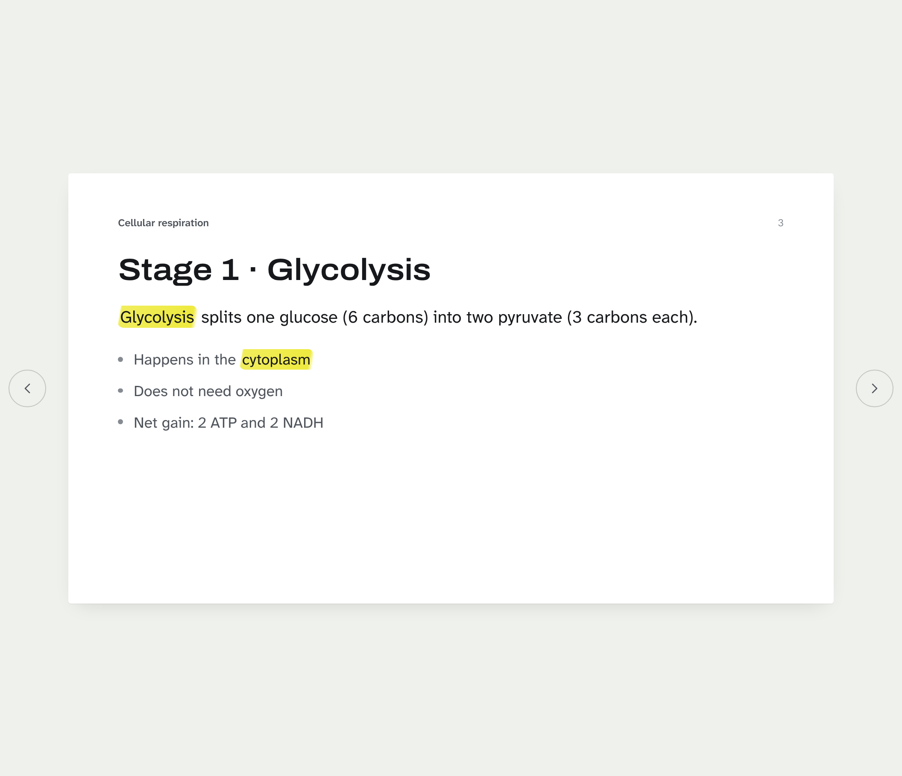
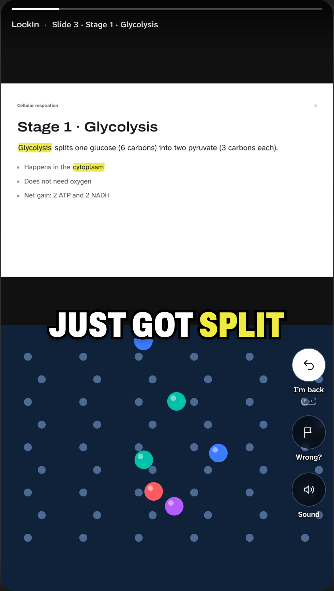
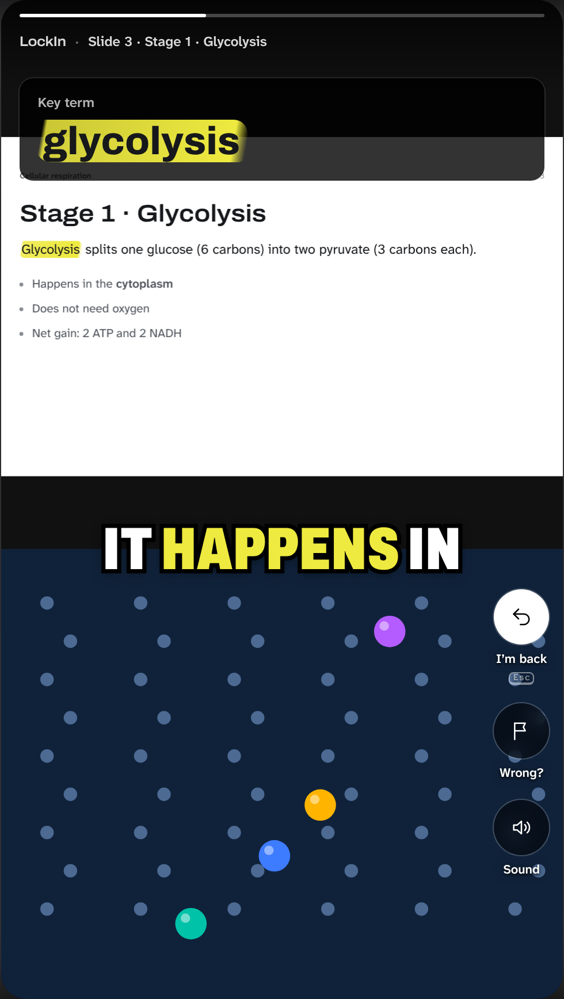
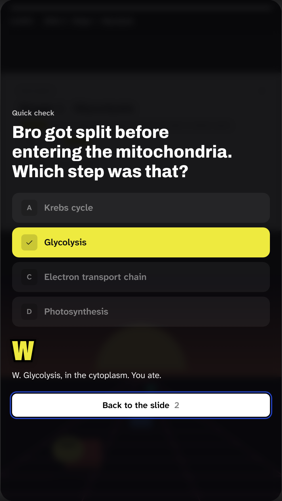
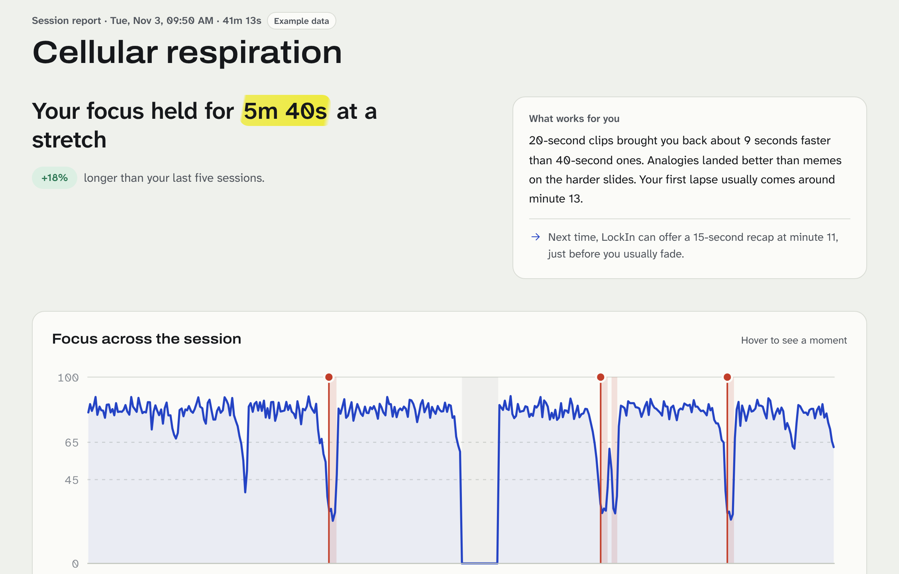

Study
You read. Nothing moves.
We need students to test LockIn through three weeks of real revision.

Your own slides. LockIn only steps in when your focus slips.

You read. Nothing moves.

Look away and the slide comes back as a clip.

One question, then back to the slide.
Each frame becomes a number, then it is gone.
| Measured | Never |
|---|---|
| Head direction | Recording video |
| Eyes on the screen | Uploading video |
| Eyes closed | Running while paused |
| Which window is active | Running outside a session |
Press P to pause it.

After each session: how long your focus held, and where it slipped.
The report shown uses sample data.